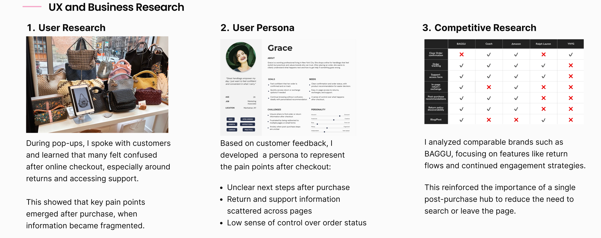
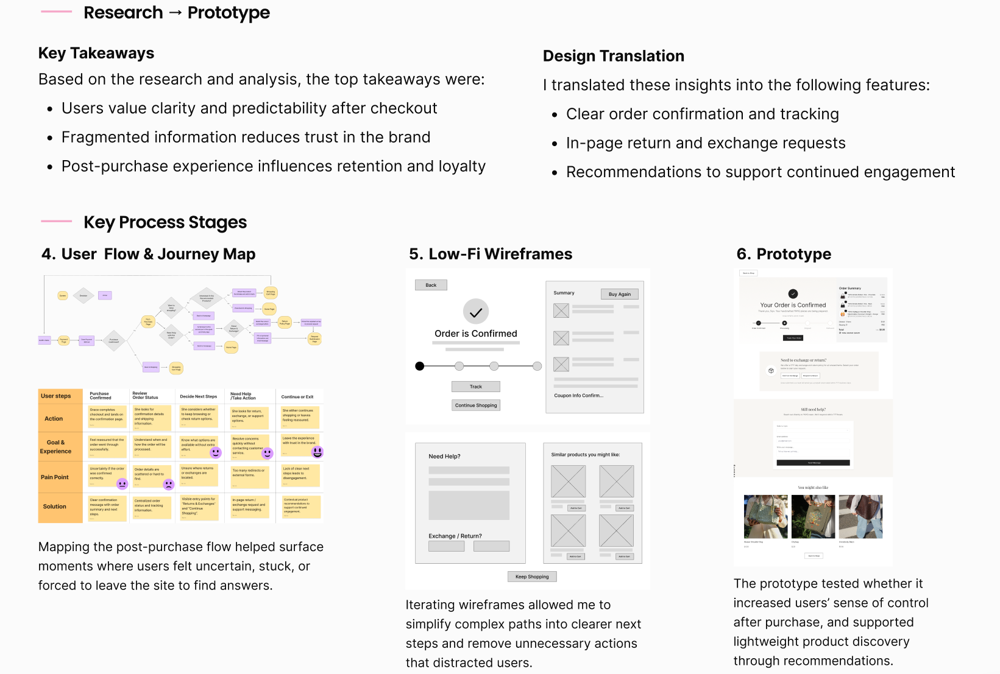
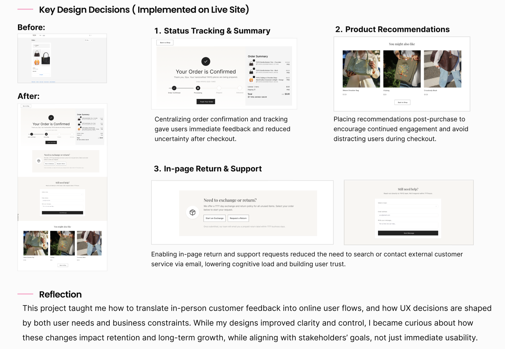
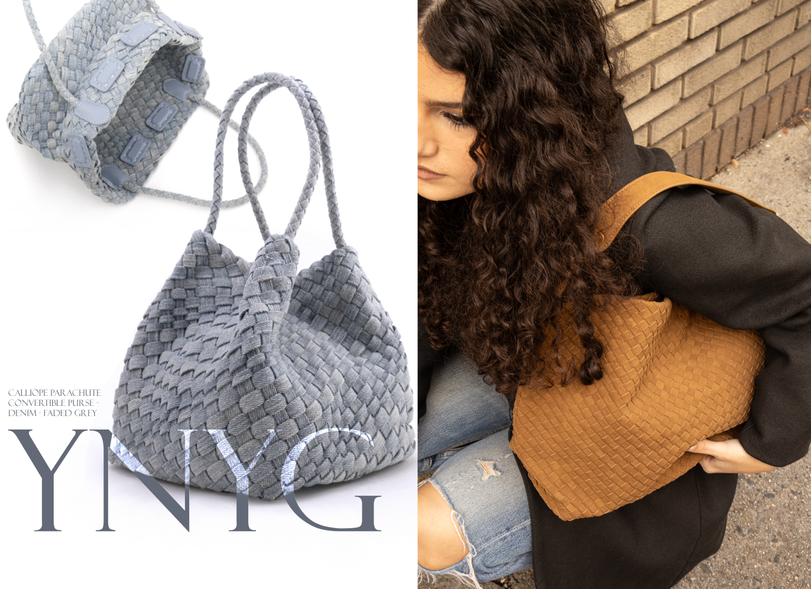

Optimizing Post-Purchase Engagement for YNYG
Project Type: UX Research & Design · E-commerce
Role: Product Design Intern
Timeline: August 2025 - Present
Tools: Figma, Shopify Analytics, AI-Prototyping Tools
APHRODITE BRANDS GROUP is a fashion and lifestyle brand management company dedicated to elevating brands through strategic innovation, storytelling, and experiential retail. One of the main brands I work with is YNYG Forever Young, a handcrafted woven vegan leather handbag brand.

Some design artifacts and metrics are not shown due to NDA. The emphasis here is on my UX research process, design rationale, and collaboration with stakeholders.
UX Case Study - YNYG Shopify Website
This case study focuses on the post-purchase stage of the online shopping journey of the handbag brand YNYG, exploring how UX improvements can reduce user confusion, build trust, and support long-term engagement.
My Contribution:
• Conducted in-person interviews at pop-up events to gather first-hand insights
• Translated qualitative feedback into actionable UX problems and design goals
• Redesigned post-purchase user flows and information structure
• Collaborated with design and operations to implement and iterate solutions.



Other Workstreams
1. AI Stylist & Digital Wardrobe Mobile App
Conducted competitive analysis of AI styling and wardrobe apps to evaluate features and onboarding strategies. Designed first-time user flows to demonstrate product value before registration. Produced personas, journey maps, and wireframes, and created high-fidelity UI for wardrobe scanning and AI-generated outfit recommendations.

2. Brand & Marketing Visuals
I design posters, brochures, Instagram promotional graphics (including New York pop-up events), email banners,
and photography-based visuals to support campaigns and tell the brand story consistently across channels.
